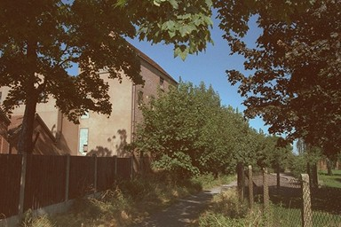
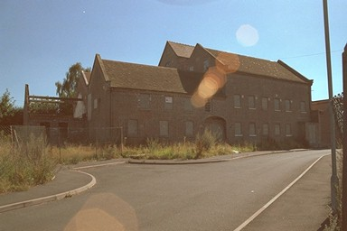

When I first saw it this mill was in the course of being reconstructed, and I was pleased to see a fine old building put to use. Unfortunately the project must have failed, for it has been boarded up for some time now. 2010 - That statement was overtaken by time, and the mill recycled as a rather fine block of flats.
